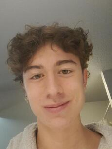

Né à Sallanches le 4 juin 2003, mes parents m'ont donnés le nom de Nathan DONAT-FILLIOD. J'ai habité toute ma vie au Mont-Saxonnex d'où mon père est originaire. Ma mère, quand à elles viens de la capitale. Je vais maintenant vous raconter ce qu'il y a à savoir sur moi. Bonne lecture !

Une enfance banale
Depuis que je suis tout petit, il y a deux choses que j'aime faire : faire du sport et jouer aux jeux vidéos. C'est pourquoi j'ai commencé le foot dès mes 6 ans et je n'ai arrêter qu'en terminale, car impossible de continuer à cause des études. J'ai d'abord commencé à jouer dans le petit club de mon village où j'occupaise le poste d'attaquant. À ce moment toute l'équipe comptait sur moi grâce à ma vitesse. Quand je suis entré au lycée j'ai changer de club pour aller jouer à l'US Vougy et c'est là que j'ai commencé à être défenseur. J'occupais d'abord le poste d'aillier mais au bout de quelques mois, mon coach m'a fait passer défenseur central. Je me débrouillait très bien et c'est pour ça que je suis resté à ce poste pendant quatre ans. En entrant au lycée, je commençais à m'ennuyer à ce poste qui n'utilisait pas pleinement mes capacités. C'est pourquoi j'ai demandé à mon coach de me changer de poste. Il m'a alors placer en six. J'adorais ce poste qui me permettais de faire ce que j'aime, c'est à dire défendre tout en pouvant être libre de ma position sur le terrain. Petite chose en plus : j'étais le capitaine de l'équipe depuis ma deuxième année à Vougy. J'ai arrêté le foot en terminale car l'ambiance de jeu en sénior était horrible. Ormis le foot, je fait aussi du ski tous les hivers depuis que je sais marché. Je n'ai jamais voulu entrer dans un club mais tout le monde me dit que j'ai un bon niveau. Je fait aussi un peu de snowboard mais j'ai un moin bon niveau. Ce que j'aime dans ces sports d'hiver c'est la qualité et le style, pas la vitesse. Je joue aussi beaucoup aux jeux vidéos depuis que j'ai découvert Mario Kart sur la Wii de mon tonton. Cette année là j'ai reçu une Wii à Noël et j'ai joué à des jeux comme Mario Kart, Zelda et Skylanders pendant des années. J'ai aussi reçu une PS3 sur laquelle je jouais à Ratchet et Clank ou GT5. Mais j'ai vraiment commencé à jouer aux jeux vidéo quand ma cousine m'a fait découvrir Minecraft. Du CM2 jusqu'au lycée, je n'ai joué qu'à ça. D'ailleur j'avais un très bon niveau de PvP et c'est pourquoi j'ai été invité dans la team ByFruitZ. C'était une équipe très compétitive et j'ai rapidement gravis les échelons. J'ai arrêté de jouer à Minecraft au lycée et depuis je joue à Rocket League ou alors à tous types de jeux avec mes amis.
Des études dans l'informatique
Quand je suis entré au lycée, je ne savais pas du tout ce que je voulais faire. La seule chose que je savais c'est que j'aimais le sport et les jeux vidéos. C'est pourquoi lorsque l'on m'a demandé de choisir plusieurs spécilités dans lequuelles m'orienter j'ai pris Maths, SVT et NSI pour pouvoir avoir plus de temps pour réfléchir. Au final je me suis plutôt orienté vers l'informatique car j'aime pouvoir créer des choses à partir de rien et l'informatique ouvre des portes sur telement de chemins que tout est possible. J'ai commencé à programmer en seconde avec du JavaScript. Ensuite j'ai fait du python en NSI pendant mes années de première et terminale, ce que j'ai adoré. Pendant le premier confinement, j'ai appris l'HTML et le CSS pour pouvoir créer des sites web ainsi que les commandes Linux. Puis en fin de terminal j'ai commencer à apprendre le C, un language que j'allais utiliser pendant mes études à Epitech. Cette école fonctionne grâce à une pédagogie par projets ce qui veut dire qu'il n'y a pas de cours. On nous donne des projets qu'il faut rendre avant une certaine deadline. On gère donc totalement notre méthode et nos horaires de travail. Ce qui est cool c'est que lorsqu'on a terminé un projet, on peut apprendre un autre language à côté. Si vous voulez avoir un apperçu de mes projets à l'école, vous pouvez cliquer ici.
La passion de l'océan
Ormis les jeux vidéos et le sport, j'ai une passion pour tout ce qui touche à l'océan. Les sports comme le surf ou la voile m'attirent beaucoup. J'essaye aussi d'apprendre tout ce qui concerne la navigation, la cartographie et autres. Un de mes rêves est de m'acheter un bateau, pas un bateau à moteur mais un vieu grèment en bois. Et pouvoir partir où je veux et quand je veux avec mes amis. Ça serai la liberté absolue. J'ai d'ailleur consacré une autre page pour parler de ça : La passion de l'océan